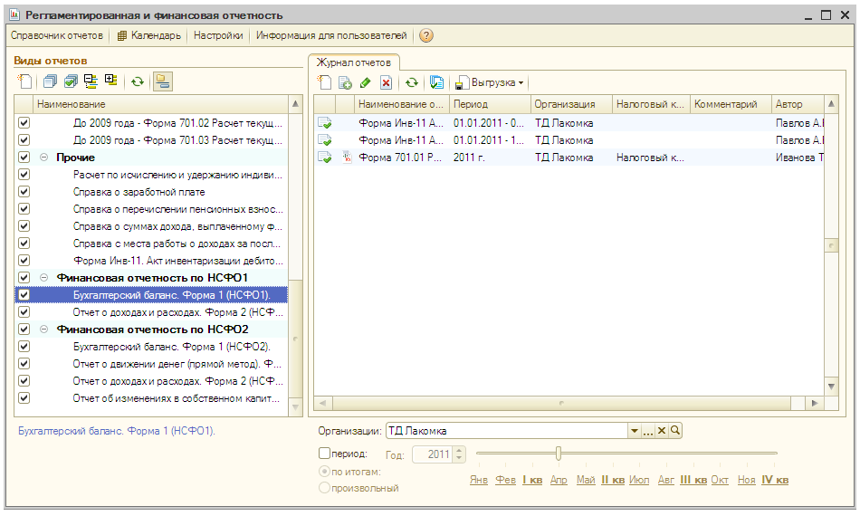
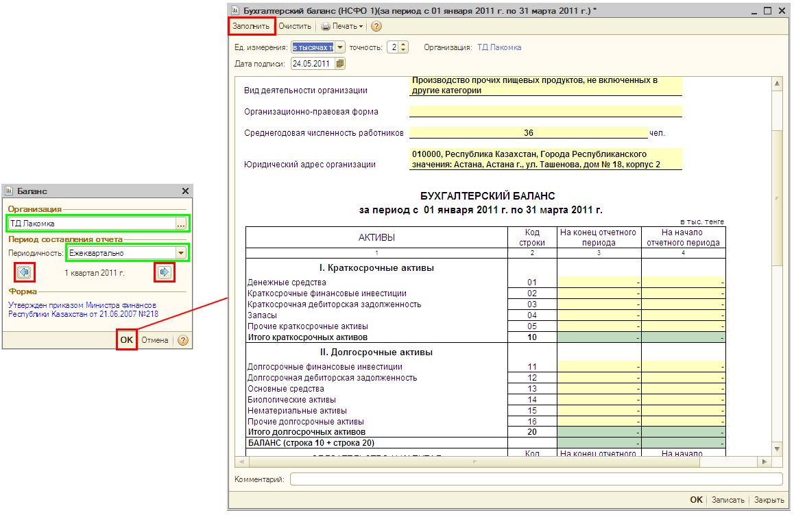
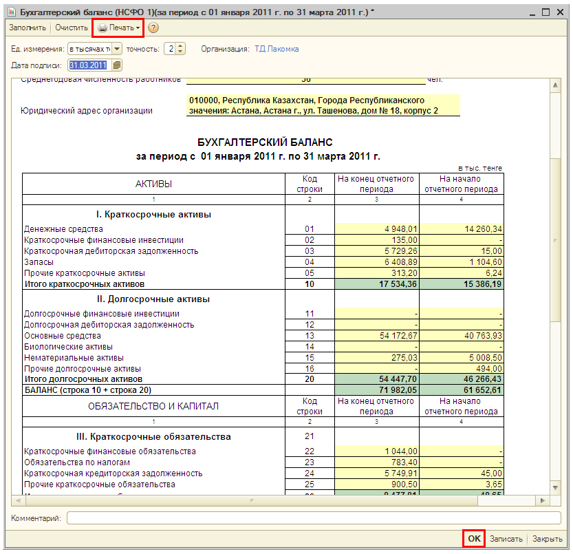
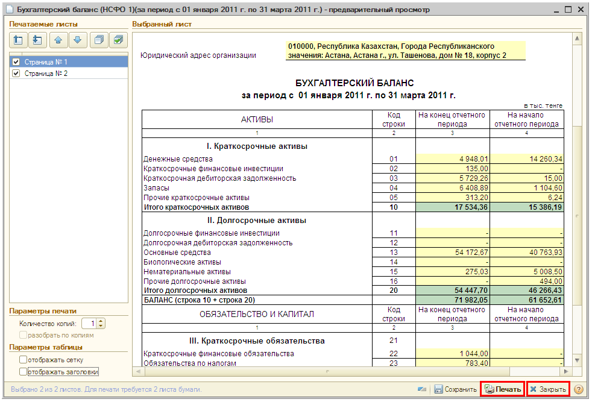
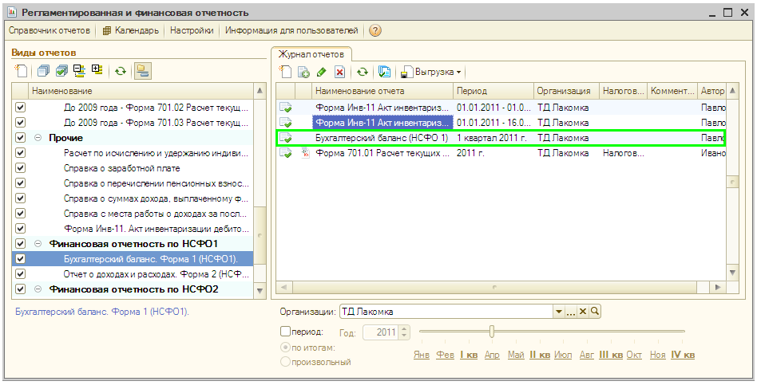

Формирование отчетности: бухгалтерский баланс
В «1С:Бухгалтерии 8 для Казахстана» автоматически формируются формы бухгалтерской отчетности, налоговые декларации, отчеты для органов статистики и государственных фондов и другие регламентированные отчеты.
ПРИМЕЧАНИЕ
Регламентированные отчеты — это отчеты, форма, порядок заполнения, сроки и порядок представления которых определяются различными государственными органами. |
- Откройте список регламентированных отчетов. Для этого в меню Отчеты выберите пункт Регламентированные отчеты.

Бухгалтерский баланс
- Для формирования бухгалтерского баланса за 2011 год дважды щелкните мышью по строке с наименованием «Бухгалтерский баланс. Форма 1 (НСФО1)».
- На экран будет выведено окно, в котором укажите организацию и период составления отчета так как показано на рисунке. Нажмите кнопку ОК в нижней части окна.
 - Откроется форма бухгалтерского баланса. Для автоматического заполнения отчета по данным информационной базы нажмите кнопку Заполнить в верхней командной панели формы отчета.
- Чтобы вывести на экран компьютера бланк бухгалтерского баланса для печати, нажмите кнопку Печать в верхней части формы отчета. В выпадающем меню выберите Показать бланк. Отчет будет выведен в виде табличного документа для просмотра и редактирования.

 - Для печати отчета следует нажать кнопку Печать в нижней части формы полученного табличного документа — бланка бухгалтерского баланса.
- Закройте бланк бухгалтерского баланса нажатием на кнопку Закрыть в нижней части формы бланка.
- Нажмите кнопку ОК в нижней части формы отчета Бухгалтерский баланс для сохранения его в информационной базе.
ПРИМЕЧАНИЕ
Регламентированные отчеты сохраняются в информационной базе. Список сохраненных отчетов отображается в журнале отчетов. Из журнала можно открыть любой ранее сформированный отчет, внести в него изменения и заново сохранить с уже внесенными изменениями. |

Только что Вы научились формировать бухгалтерский баланс.
Это заключительный раздел пособия.
Желаем Вам успешной и плодотворной работы с «1С:Бухгалтерией 8 для Казахстана»!